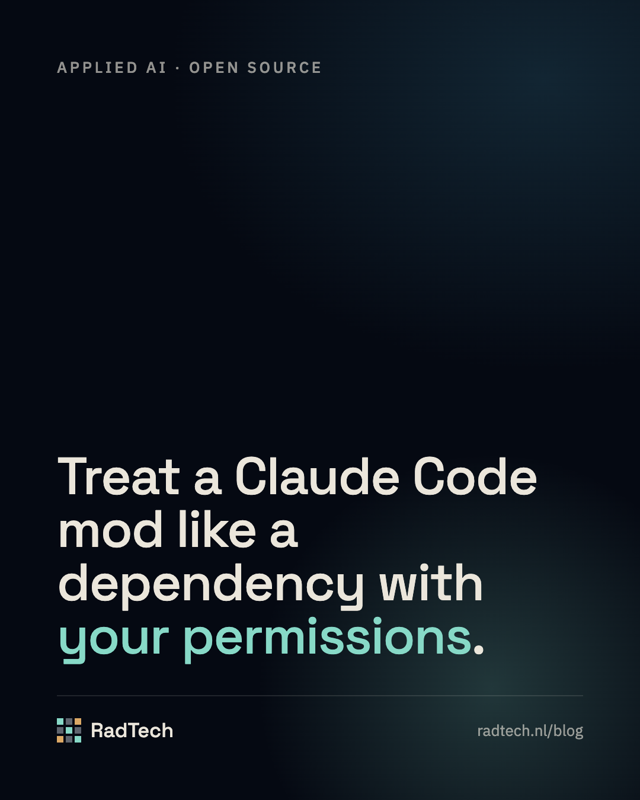

Treat a Claude Code mod like a dependency with your permissions
Claude Code mods run with your permissions and no sandbox. What a mod can reach, and how modwall shows it and holds or refuses mods by policy.

Claude Code mods can read prompts and approve tool calls, and they run unsandboxed. Before a team installs them freely, it needs to see what each mod can touch and decide which ones load. This post explains the risk and how modwall, our open-source mod firewall, makes that decision visible.
What a mod can do
Claude Code shipped mods on 1 October 2026, in version 2.1.287. A mod is a plugin made of JavaScript or TypeScript event handlers that run inside Claude Code itself. That is what makes mods useful: they can draw a status band above the prompt, add a slash command, rewrite a prompt before it reaches the model, or answer a tool call.
The same reach is the risk. The documentation is direct about it: a mod runs with your permissions. It can read and write your files and make network requests. It sees every prompt and every tool call, and it can read environment variables, which is where API keys usually live. A mod can also approve a tool call before you are asked, including a call that your own settings hook would have stopped to check. Mods are not sandboxed, and a process a mod starts runs outside the sandbox too.
Managed machines get some cover. On a Team or Enterprise sign-in, or with managed settings, a built-in guard loads first and administrators can restrict which mods load at all. A developer on a personal machine has none of that by default.
Why this matters now
The mod ecosystem is about a week old and growing fast. On 7 October, one public directory listed 183 mods. 128 of them had fewer than 10 stars on GitHub, which mostly means they are new and have had few readers besides their author. That is normal for a young ecosystem. It also means you cannot yet assume someone else has checked a mod.
A mod is closer to a dependency with root access than to a theme. Treat it the way you would treat a new npm package that asks for your production credentials: read what it touches before it runs, and keep a list of what you allow.
What modwall does
modwall is a mod that judges other mods as they load. It hooks the plugin.register event, which fires each time another mod's code is about to load. That event carries what Claude Code's own scanner read from the mod's source: the events it hooks, the calls it makes, the environment variables it names and the state it refers to. The scan is exact for those lists, because a mod that spells those calls any other way does not load at all.
modwall turns that scan into reach labels, such as prompts, tool-gate, network, processes and secret-names, and a risk level. The classifier is an allowlist: only a small set of known-safe calls counts as low risk, and anything modwall does not recognise counts as high.
You then pick a policy. In audit mode every mod loads, and modwall records it and alerts you to each new high-risk mod. In ask mode, high-risk mods that are not on your allowlist are held at load until you approve them with /modwall allow. In allowlist mode, every mod that is not on your list is refused. A blocklist applies in every mode. /modwall scan lists every installed plugin with the footprint Claude Code's own validator reports for it.
modwall keeps its own reach small. It reads no prompts and hooks no tool calls. It makes no network requests, and it runs a process only inside /modwall scan, with fixed arguments. By its own rules it still rates itself high risk, because a mod that can refuse other mods is a powerful thing to install. Read its source before you trust it.
How we tested it
modwall ships with 37 tests, run with claude plugin test on Claude Code 2.1.295. They drive the real hook against a test engine, so a refusal in a test is the same refusal a user would see. They fall into four groups.
The classifier. Every call and event a mod can use is checked against the known-safe set, and the tests pin both sides of the line. Drawing, toasts, the clock, a mod's own store and state, and registering a slash command are low risk. Read-only session facts such as the working directory, the model and the session id are low too, but session.messages, which returns the conversation, is high. Reading an environment variable is medium when the name is ordinary, like HOME, and high when it looks like a secret, like GITHUB_TOKEN. A made-up call such as brand.new comes out as unknown and high, which is the point of an allowlist: a new API in next week's release is treated as dangerous until someone looks at it.
The policy. Each mode is tested on its own. audit loads a high-risk mod, records its reach and toasts it once. ask holds a high-risk mod and lets a low-risk one through. allowlist refuses anything not on the list, and admits a listed mod only at the version it declares. The blocklist refuses in every mode, including audit.
Failure. A firewall that crashes open is not a firewall. The tests make modwall's own storage throw mid-check and confirm that ask and allowlist then refuse the mod they were judging, while audit still applies the blocklist. A stored list that has been damaged, for example hand-edited into the wrong shape, makes the strict modes refuse every user mod and is reported in /modwall.
Load order. modwall can only judge what loads after it. One test runs it from the prepend tier next to an ordinary user mod named early. In allowlist mode that mod is refused at load, with the message early: refused by modwall. Outside the test suite we checked the same thing in a clean, signed-out configuration: without prependPlugins, a mod installed before modwall loaded unjudged, and with it, every user mod was judged whatever the install order.
Our own mods, judged
The classifier also reads real claude plugin validate --json output, so we ran it on the two mods we publish.
agent-pager, which pages your phone and lets you reply, comes out high, with four reach labels:
http.fetch, to reach Telegram or ntfy:networkprompt.submit, to turn your reply into a prompt:prompts- the
turn.completeevent, to know when a long turn ends:prompts - a
tool.callhook on the question tool, to page you when the agent asks something:tool-gate - a classic notification hook, which is not in the known-safe set:
unknown
Every line is accurate. A mod that types into your session for you should need your approval, and in ask mode it does. modwall rates itself high as well, for other-mods (it hooks plugin.register) and processes (/modwall scan runs the validator). We did not tune the rules to make our own work look safe.
What it cannot do
A security tool that oversells itself is worse than none, so the limits are in the README and here.
modwall can only judge mods that load after it. Claude Code reads a prependPlugins setting that loads a named mod first, and in an isolated test that put modwall ahead of every user mod. That setting is only honoured on machines without managed settings and without a Team or Enterprise sign-in, and we have not yet confirmed it for a signed-in personal account.
It judges the footprint only. A mod that runs a helper program has handed everything to that program, so modwall treats processes and network as "can do anything". Names and versions are a mod's own claim, so an allowlist entry pins the version string the mod declares, not its code. And it cannot see classic plugins (command hooks, MCP servers, skills), because those never pass through plugin.register.
How to set it up
Install it from GitHub:
/plugin marketplace add RadTech-Solutions/modwall
/plugin install modwall@modwallAdd "prependPlugins": ["modwall@modwall"] to your user settings so it loads ahead of other mods, where your setup allows it. Start in audit mode for a week and read /modwall to see what your installed mods can reach. Then move to allowlist, approve the mods you rely on, and let everything else ask first.
What to do next
Run /modwall scan once and read the footprint of every mod you already have. Decide which mods may see your prompts and which may touch the network, and write that list into modwall's allowlist. Review it whenever a mod updates, because a new version can widen its reach without telling you.
RadTech does AI advisory, building and consulting. If your team is rolling out coding agents and wants the controls set up properly, book a 15-minute call.
// Sources
- Mods overview · Claude Code docs
- Mods for administrators · Claude Code docs
- Plugin security · Claude Code docs
- Claude Mods directory, mod list as of 7 October 2026 · claude-mods.com
- modwall · GitHub, RadTech-Solutions